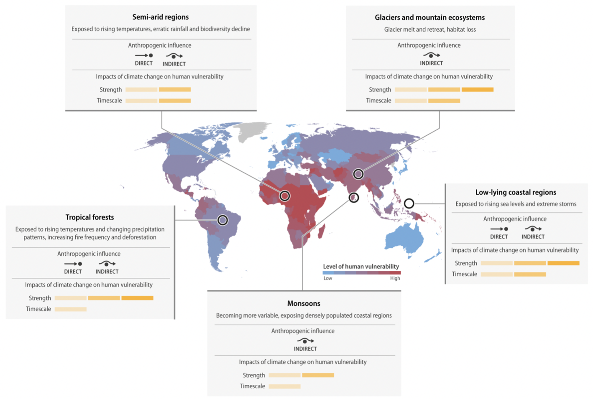
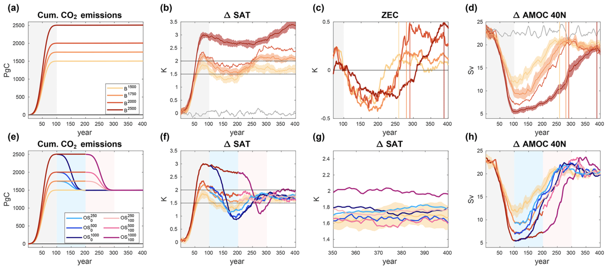

Research Highlights
1. Climate-driven impacts and human vulnerability increase the emergence of vulnerable regions
Many regions Many regions of the Earth show accelerated climate-related changes. In regions most vulnerable to climate change, physical, ecological and socioeconomic systems are losing resilience against further change. Consequently, large numbers of people and their livelihoods are affected due to the close interconnection of human and natural vulnerabilities. Socioeconomically vulnerable regions emerge on a global scale. Regional hotspots cluster in Central America, Asia, the Middle East and several regions of Africa: the Sahel, Central and East Africa, where socio-economic factors significantly contribute to human vulnerability. Each hotspot has its unique economic, ecological and political conditions. Gender inequality exacerbates vulnerability to large climate-driven impacts. An estimated 1.6 billion people live in regions of the highest category of vulnerability, whose populations are also predicted to double by 2050. Changes in climate dynamics due to global warming could lead to significant disturbances in regions characterized by human vulnerability. Furthermore, anthropogenic interference puts many ecosystems at high risk of structural and dynamic change, decreasing ecosystem services and resource availability for communities as well as reducing their climate mitigation capability. Vulnerability hotspots are also related to the loss of habitats and biodiversity decline. The close connection between socioeconomic drivers of vulnerability and human livelihoods is determined by access to resources and basic needs, such as food and water supplies.
Future Earth, The Earth League, WCRP: 10 New Insights in Climate Science 2022. Stockholm, 2022.
2. Earth system reversibility under temperature overshoots
Anthropogenic CO2 emissions cause irreversible climate change on centennial to millennial timescales, yet current mitigation efforts are insufficient to limit global warming to a level that is considered safe. Carbon dioxide removal (CDR) has been suggested as an option to partially reverse climate change and to return the Earth system to a less dangerous state after a period of temperature overshoot. Whether or to what extent such partial reversal of climate change under CDR would happen is, next to socio-economic feasibility and sustainability, key to assessing CDR as a mitigation option. Here, we use a state-of-the-art Earth system model that includes a representation of permafrost carbon to investigate the reversibility of the Earth system after overshoots of different durations and magnitudes in idealized simulations. We find that atmospheric CO2 concentrations are slightly lower after an overshoot, compared to a reference simulation without overshoot, due to a near-perfect compensation of carbon losses from land by increased ocean carbon uptake during the overshoot periods. The legacy of an overshoot is, on a centennial timescale, indiscernible (within natural variability) from a reference case without overshoot for many aspects of the Earth system including global average surface temperature, marine and terrestrial productivity, strength of the Atlantic meridional overturning circulation, surface ocean pH, surface O2 concentration, and permafrost extent, except in the most extreme overshoot scenario considered in this study. Consistent with previous studies, we find irreversibility in permafrost carbon and deep ocean properties like seawater temperature, pH, and O2 concentrations. We do not find any indication of tipping points or self-reinforcing feedbacks that would put the Earth system on a significantly different trajectory after an overshoot. Hence, the effectiveness of CDR in partially reversing large-scale patterns of climate change might not be the main issue of CDR but rather the impacts and risks that would occur during the period of elevated temperatures during the overshoot.
3. Subsurface thermodynamic response to increased Land Surface Model depth
The representation of the thermal and hydrological states in land surface models is important for a realistic simulation of land–atmosphere coupling processes. The available evidence indicates that the simulation of subsurface thermodynamics in Earth system models is inaccurate due to a zero-heat-flux bottom boundary condition being imposed too close to the surface. To assess the influence of soil model depth on the simulated terrestrial energy and subsurface thermal state, sensitivity experiments have been carried out in piControl, historical, and RCP scenarios. A deeper bottom boundary condition placement has been introduced into the JSBACH land surface model by enlarging the vertical stratification from 5 to 12 layers, thereby expanding its depth from 9.83 to 1416.84 m. The model takes several hundred years to reach an equilibrium state in stand-alone piControl simulations. A depth of 100 m is necessary, and 300 m recommendable, to handle the warming trends in historical and scenario simulations. Using a deep bottom boundary, warming of the soil column is reduced by 0.5 to 1.5 K in scenario simulations over most land areas, with the largest changes occurring in northern high latitudes, consistent with polar amplification. Energy storage is 3-5 times larger in the deep than in the shallow model and increases progressively with additional soil layers until the model depth reaches about 200 m. While the contents of Part I focus on the sensitivity of subsurface thermodynamics to enlarging the space for energy, Part II addresses the sensitivity to changing the space for water and improving hydrological and phase-change interactions.
4. Permafrost temperature sensitivity to improved soil thermodynamics
The impact of various modifications of the JSBACH land surface model to represent soil temperature and cold-region hydro-thermodynamic processes in climate projections of the twenty-first century is examined. We explore the sensitivity of JSBACH to changes in the soil thermodynamics, energy balance and storage, and the effect of including freezing and thawing processes. The changes involve 1) the net effect of an improved soil physical representation and 2) the sensitivity of our results to changed soil parameter values and their contribution to the simulation of soil temperatures and soil moisture, both aspects being presented in the frame of an increased bottom boundary depth from 9.83 to 1418.84 m. The implementation of water phase changes and supercooled water in the ground creates a coupling between the soil thermal and hydrological regimes through latent heat exchange. Momentous effects on subsurface temperature of up to ±3 K, together with soil drying in the high northern latitudes, can be found at regional scales when applying improved hydro-thermodynamic soil physics. The sensitivity of the model to different soil parameter datasets is relatively low but shows important implications for the root zone soil moisture content. The evolution of permafrost under preindustrial forcing conditions emerges in simulated trajectories of stable states that differ by 4-6 x 106 km2 and shows large differences in the spatial extent of 105-106 km2 by 2100, depending on the model configuration.
5. Accurate estimation of required Land Surface Model Depth for climate-change simulations
Many current-generation climate models have land components that are too shallow. Under climate change conditions, the long-term warming trend at the surface propagates deeper into the ground than the commonly used 3-10 m. Shallow models alter the terrestrial heat storage and distribution of temperatures in the subsurface, influencing the simulated land- atmosphere interactions. Previous studies focusing on annual timescales suggest that deeper models are required to match subsurface-temperature observations and the classic analytical heat conduction solution. However, for a systematic investigation of land-model deepening in the frame of anthropogenic climate change, the classic analytical solution is inaccurate because it does not mimic the timescale and amplitude of the simulated warming trend. This study intends to bridge the gap between analytical and simulation-based estimates of the subsurface thermodynamic state by adapting the classic analytical framework to mimic long-term anthropogenic warming. The analysis shows that a land-model depth of at least 170 m is recommended for a proper simulation of the post-1850 ground climate, which differs up to 30% from the estimate of the classic approach. Compared to previous studies, this provides an accurate estimate of the required land model depth for long-term climate-change simulations and indicates the relative bias in insufficiently deep land models.
Research collaborations
- Max Planck Institute for Meteorology, Hamburg, Germany
- Helmoltz Zentrum Hereon, Geesthacht, Germany
- Complutense University of Madrid, Madrid, Spain
- Center for Energy, Environmental and Technological Research, Madrid, Spain
- University of Alaska Fairbanks, Fairbanks, Alaska, USA
- Utrecht University, Utrecht, Netherlands
- Met Office, Exter, UK
- University of Exeter, Exeter, UK
- Lund University, Lund, Sweden
- Potsdam Institute for Climate Impact Research, Potsdam, Germany
- NORCE Norwegian Research Centre, Bjerknes Centre for Climate Research, Bergen, Norway
- Norwegian University of Science and Technology, Trondheim, Norway
- Universidade Federal de Santa Catarina, Florianopolis, Brazil
- Bharti Institute of Public Policy, Indian School of Business, Hyderabad, India
- Nansen Scientific Society, Bergen, Norway
- Helmholtz Centre for Environmental Research, Leipzig, Germany